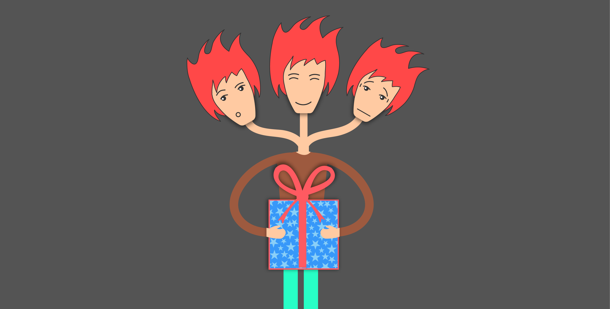

Probability | Strategy | Best Prize Selection

Question
Suppose that we are to be presented with n distinct prizes in sequence. After being presented with a prize
we must immediately decide whether to accept it or reject it and consider the next prize. The only information we
are given when deciding whether to accept a prize is the relative rank of that prize compared to ones already seen.
That is, for instance, when the fifth prize is presented we learn how it compares with the first four prizes already
seen. Suppose that once a prize is rejected it is lost, and that our objective is to maximize the probability of
obtaining the best prize. Assuming that all n! orderings of the prizes are equally likely, how well can we do?
Reference: Sheldon Ross Probability Modelling Edition 10
Solution
Below is a more detailed explanation than the text's clear yet concise approach.
- In order to get a systematic way of rejection, let us say that when the gifts are shown to us in sequence, we
would be rejecting the first k and then accept the first prize that is larger than all the first k
This means that we need to calculate the probability that we get the first prize when the first k are rejected
- Systematically we can write \[P_k(best) = \underset{i}{\Sigma} P_k(best \mid k=i) P(k=i)\]
- The first of the multiplier is \(\underset{i}{\Sigma} P_k(best \mid k=i)\) is dependent on \(i\) has two
distinct
sets.
- \([i \le k]\) When we accept a prize before getting to the best one, the probability of getting the best
prize is zero \[P_k(best \mid k=i) = 0 \mid i \le k\]
- \([i > k]\) This is the probability that the first \(i-1\) contain \(k\) good positions and this would be
\[P_k(best \mid k=i) = \frac{k}{i-1} \mid i > k\]
- \(P(k=i)\) would be independent of \(i\) and equal to \[\frac{1}{n}\]
- Bringing all of the above together
\[P_k(best) = \overset{k}{\underset{i=2}{\Sigma}} P_k(best \mid k=i)
P(k=i) +
\overset{n}{\underset{i=k+1}{\Sigma}} P_k(best \mid k=i) P(k=i)\]
\[P_k(best) = \underset{i}{\Sigma} P_k(best \mid k=i) = 0 * P(k=i) +
\overset{n}{\underset{i=k+1}{\Sigma}} \frac{k}{i-1} \frac{1}{n}\]
\[P_k(best) = \frac{k}{n} \overset{n}{\underset{i=k+1}{\Sigma}}
\frac{1}{i-1} \]
\[P_k(best) \approx \frac{k}{n} \int_k^{n-1} \frac{1}{x}\]
\[P_k(best) \approx \frac{k}{n} log(\frac{n-1}{k}) \]
\[P_k(best) \approx \frac{k}{n} log(\frac{n}{k}) \]
- To optimize this, we need to differentiate the above. Changing the form of above, we get
\[g(x) = \frac{x}{n} log(\frac{n}{x})\]
\[g'(x) \implies \frac{1}{n} log(\frac{n}{x}) - \frac{1}{n} = 0\]
\[g'(x) \implies log(\frac{n}{x}) = 1\]
\[g'(x) \implies e^{log(\frac{n}{x})} = e^1\]
\[g'(x) \implies \frac{n}{x} = e\]
\[g'(x) \implies x = \frac{n}{e}\]
- As per this result, the best strategy is to let go of the first \(\frac{n}{e}\) prizes with the probability of
success \(\approx 0.3678\)
Simulations
Approach to the simulations for this problem
We will look at these for the probability values from 0.1 to 0.9 in steps of 0.1
- so the probabilities would be {0.1, 0.2, 0.3, 0.4, 0.5, 0.6, 0.7, 0.8, 0.9}